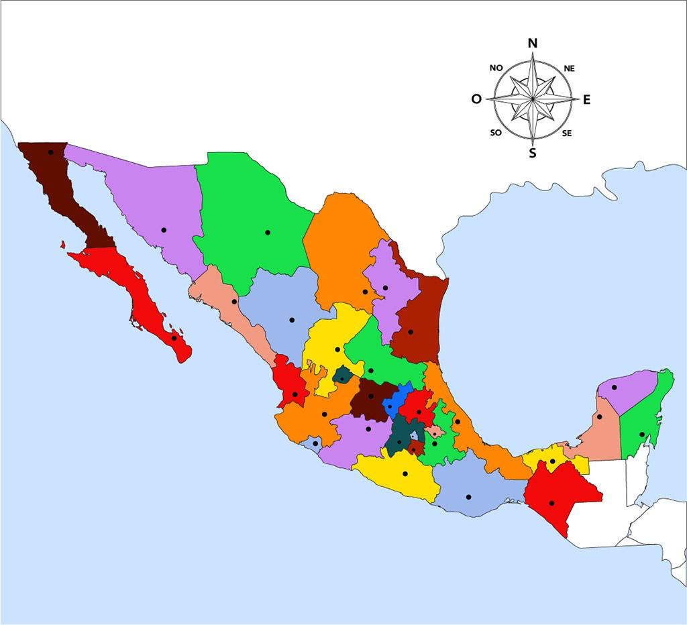

Recurso primario
Existe en la naturaleza antes de una transformación tecnológica.
Explora los recursos que alimentan el sistema eléctrico mexicano y sigue paso a paso cómo se convierten en energía eléctrica.
Comenzar recorrido ↓Separa lo que aporta energía de la máquina que la transforma.
Existe en la naturaleza antes de una transformación tecnológica.
El portador que alimenta el proceso; no siempre es un combustible.
Transformación de energía térmica, cinética o radiante.
Equipo y configuración que convierte la energía disponible.
Producto eléctrico entregado a la red o a una carga.
Asigna cada tarjeta a su categoría. Las tecnologías no son recursos: identifica cuándo pueden usar más de un combustible.
Selecciona una ruta y toca cada etapa para ver qué forma de energía se transforma.
Serie de energía neta inyectada reportada por CENACE. No es la generación bruta exclusiva de CFE.
*Representación cualitativa; la operación real depende de equipos, combustible, agua, mantenimiento y condiciones del sistema.
Energía neta inyectada reportada en 2024. Excluye generación distribuida y autoabasto local en esta serie.
Generación bruta de CFE en 2024. Energía limpia reportada por CFE: 38,982.9 GWh (25.3%).
Las cifras tienen cobertura y bases de cálculo diferentes; no se comparan como si midieran el mismo universo.
Selecciona dos o más para contrastar disponibilidad, conversión y emisiones documentadas.
| Aspecto | Gas natural · ciclo combinado | Nuclear · fisión | Solar fotovoltaica |
|---|---|---|---|
| Recurso | Gas natural fósil | Uranio (no renovable) | Radiación solar (renovable) |
| Conversión simplificada | Combustión → turbina de gas + vapor → generador | Fisión → calor → vapor → turbina → generador | Efecto fotovoltaico → corriente continua → inversor |
| Disponibilidad | Depende del suministro de combustible | Depende del combustible y disponibilidad de la unidad | Variable con radiación, hora y nubosidad |
| Control de generación | Generalmente controlable; límites de unidad y combustible | Generación controlable; respuesta operativa depende del diseño | Sujeta al recurso; almacenamiento es un componente adicional |
| Emisión directa · mediana | 370 gCO₂e/kWh | 0 gCO₂e/kWh | 0 gCO₂e/kWh |
| Ciclo de vida · mediana (rango) | 490 (410–650) gCO₂e/kWh | 12 (3.7–110) gCO₂e/kWh | 48 (18–180) gCO₂e/kWh |
Las medianas de emisiones del IPCC son referencias globales de tecnología, no factores específicos de México. Emisiones directas y de ciclo de vida tienen límites de análisis distintos. “N/D” indica que la fuente no proporciona el valor en esa categoría.
Cinco preguntas para relacionar tendencias, recursos y tecnologías.
El mapa que compartiste con datos CENACE superpuestos. Acércate por región de control para revisar las centrales registradas.
Serie reportada del sistema/mercado, con exclusiones metodológicas documentadas.
Generación bruta atribuida a CFE; su cobertura es distinta a la serie CENACE.
Selecciona un nodo para ver su relación eléctrica. El esquema distingue interconexión de ubicación geográfica.

Ajusta potencia, tensión, resistencia por fase y factor de potencia. El modelo mantiene iguales los demás parámetros.
I = P / (√3 × V × cos φ)Pérdidas = 3 × I² × R
Unidades del cálculo: P en W, V línea a línea en V, I en A, R en Ω por fase; los resultados se convierten a MW. Se asume red trifásica equilibrada, tensión y potencia constantes, conductor equivalente por fase y factor de potencia indicado.Modelo simplificado: no incluye reactancia, regulación de tensión, transformadores, efecto térmico, pérdidas de núcleo, armónicos ni topología de la red. La pérdida estimada no es un dato operativo de CENACE.Serie nacional de CFE Distribución; úsala como contexto del sistema, no como valor de cada división.
Selecciona una burbuja numerada en la ubicación orientativa de la división. La ficha muestra sus propios valores; el mapa conserva tu imagen completa.
Las series por división se mantienen en su año y alcance original; no se distribuyen promedios nacionales.
pérdidas totales de energía reportadas por CFE Distribución, equivalentes a 12.88% de la energía ingresada (cálculo del Atlas: 33.947 / 263.551 TWh).
Ajusta el voltaje primario, la relación de espiras y la potencia aparente del ejemplo.
Escalas: tensión 0–35 kV; corriente primaria 0–100 A y secundaria 0–1,500 A. Si el resultado excede el máximo, la barra llega al límite; la cifra numérica conserva el valor calculado.
Vp / Vs = Np / NsVp × Ip = Vs × Is
Modelo ideal, monofásico equivalente: sin pérdidas en cobre o núcleo, sin flujo disperso ni caída interna. Con unidades consistentes: tensión en V, corriente en A y potencia aparente en VA. En transformadores trifásicos reales, relaciones de tensión de línea y fase dependen de la conexión de devanados.Los controles son un ejemplo didáctico modificable, no especificaciones de una central ni valores oficiales de un transformador instalado.Veinte preguntas para leer el sistema eléctrico con datos, contexto y fuentes a la vista. Selecciona un tema o abre una tarjeta para ver cómo interpretar su indicador.
Una lectura por etapas que separa hechos jurídicos, objetivos declarados e indicadores observados. Las series no demuestran por sí solas causalidad.